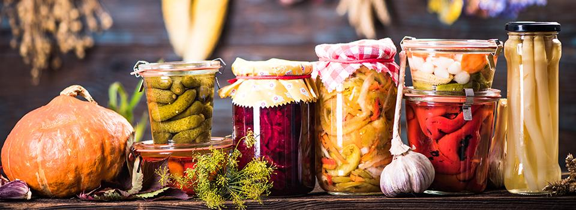
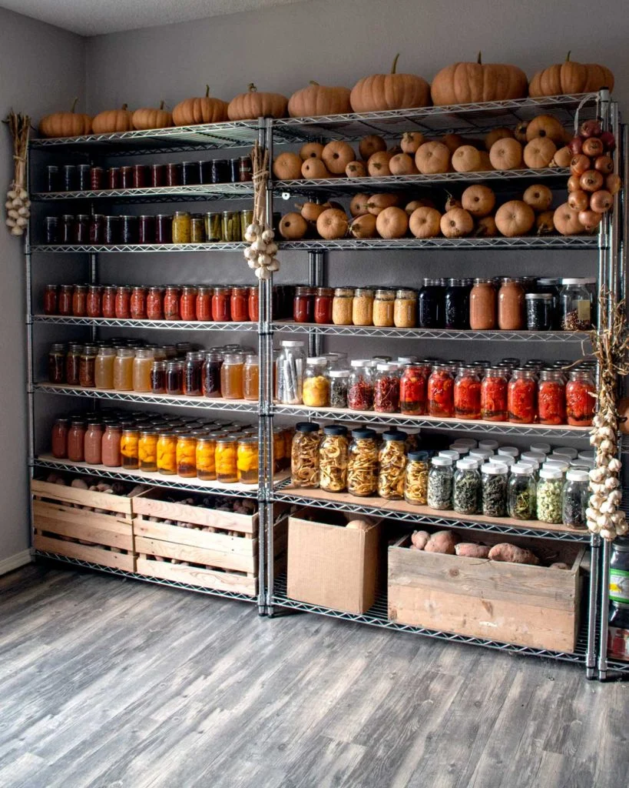
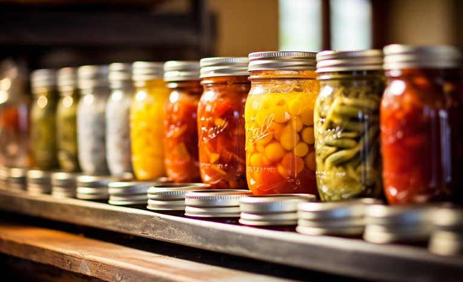

Canning Tips, Tricks, and Recipes

Why Can?
Canning lets you enjoy your garden’s harvest all year. It’s safe, fun, and a great way to reduce food waste.

Tips & Tricks
- Always sterilize jars and lids before use.
- Label jars with date and contents.
- Store in a cool, dark place.
- Use tested recipes for safety.

Favorite Recipes
- Dill Pickles: Crisp, tangy, and perfect for sandwiches.
- Strawberry Jam: Sweet and easy to make with summer berries.
- Tomato Sauce: Use up garden tomatoes for pasta all winter.
External Resource
Find more canning recipes at Ball® Canning.